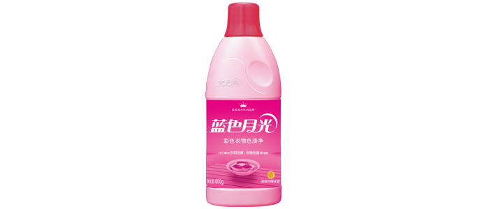
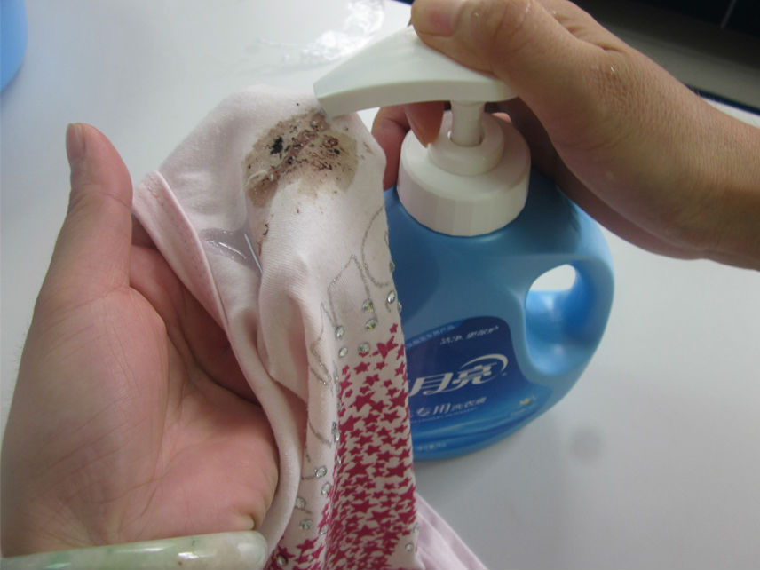
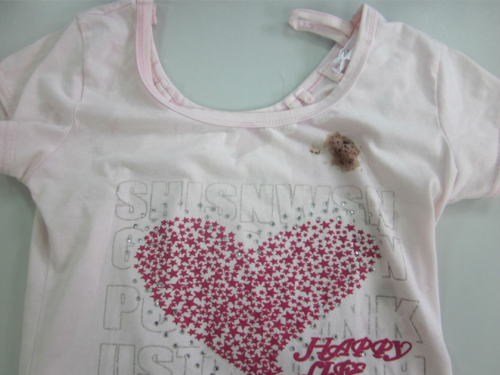
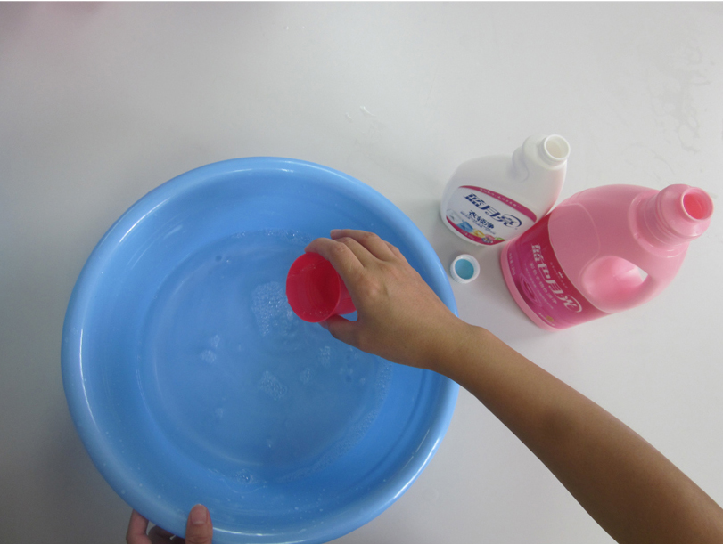
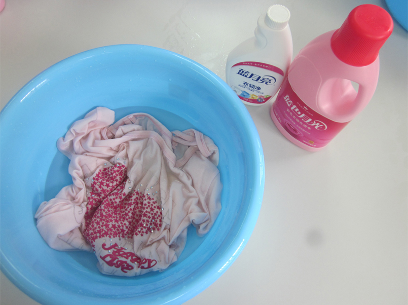
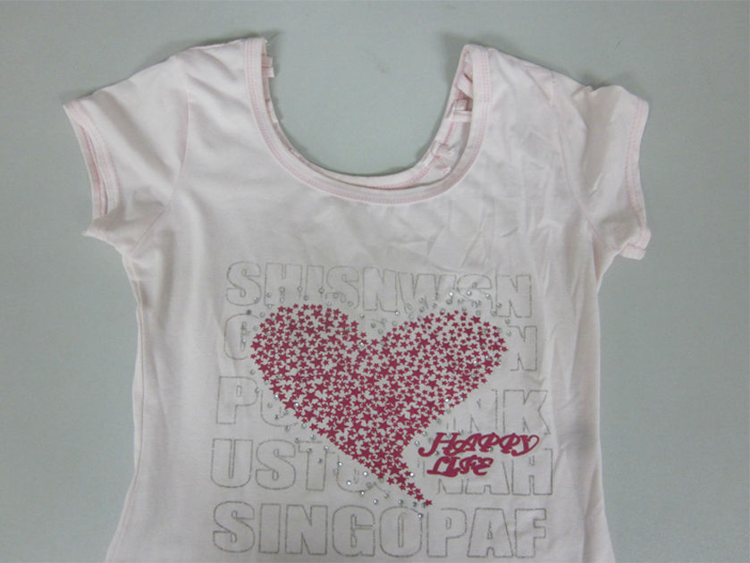
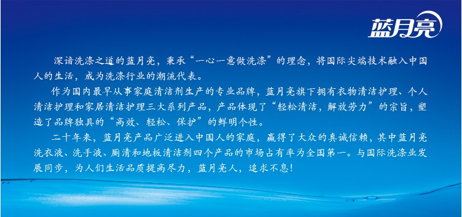

去色渍，不留印（彩色衣服）
13-12-30
蓝月亮洗衣新主张：洗衣问题有千千万万种，可洗衣难题只有两个：非“油”即“色”。
对于彩色衣服串色、搭色的情况，由于彩色衣服无法使用含氯漂渍液进行漂白（会导致衣服上原有染料褪色），因此彩色衣服串色的问题目前无有效处理方法。防止衣服串色，应做到预防为主：衣物清洗时将浅色衣物与深色衣物、易褪色衣物分开洗涤。
对于彩色衣服出现色渍用常规洗涤剂难以去除，使用蓝色月光红瓶（彩衣专用）配合色渍浸泡法，轻松去除色渍不留印！

注意事项：
*不适用于附有金属钮扣、拉链、配饰的衣物，易褪色衣物、皮革或只能干洗的衣物。
*水量宜使衣服刚湿透，蓝色月光和衣领净用量根据水量相应增减。
*浸泡过程中避免阳光直射。
*若浸泡过夜后仍有污渍未去除，可继续延长浸泡时间。
下面以血渍为例，其他色渍方法一致。
正确步骤：
第一步：用蓝月亮手洗专用洗衣液配合干衣预涂法，清洗衣服上的血渍

第二步：检查用干衣预涂法是否清楚了衣服上色渍

第三步：往盆中倒少量水（约0.5升），用蓝色月光瓶盖量取蓝色月光（彩衣专用）、衣领净各1.5瓶盖（60克）加入水中，搅匀。

第四步：放入衣物浸泡过夜

第五步：漂洗干净，血渍不见了！

蓝色月光色渍浸泡法，去色渍，不留印。
注：衣物清洗时将浅色衣物与深色衣物、易褪色衣物分开洗涤。
~~~~~~~~~~~~~~~~~~~~~~~~~~~
